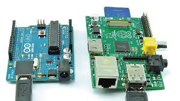
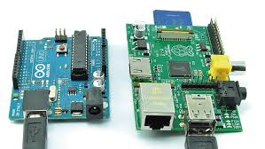

Raspberry Pi es una placa de microordenador, que como su propio nombre indica, es de pequeñas dimensiones a la cual se le pueden dar multitud de usos como veremos más adelante. La Raspberry Pi apareció en febrero de 2012, 6 años después de que comenzara el proyecto principal de esta placa, y para agosto del 2012 ya habrían vendido 500.000 unidades, y un mes después ya se había realizado la primera revisión “B” de la placa original. La primera unidad tenía 256 MB de ram y un procesador a 700 MHz, tenía el característico conector de 26 pines GPIO y salida de video por HDMI o RCA además de un conector de 3.5mm para el audio, el primer modelo carecía de puerto ethernet.
 

Además la Raspberry Pi tiene la habilidad de interactuar con el mundo exterior, puede ser usada en una amplia variedad de proyectos digitales, desde reproductores de música y video, detectores de padres, estaciones meteorológicas hasta cajas de aves con cámaras infrarrojas. Queremos que veas que la Raspberry Pi puede ser usada por niños y adultos por todas partes del mundo, para aprender a programar y entender cómo funcionan las computadoras.